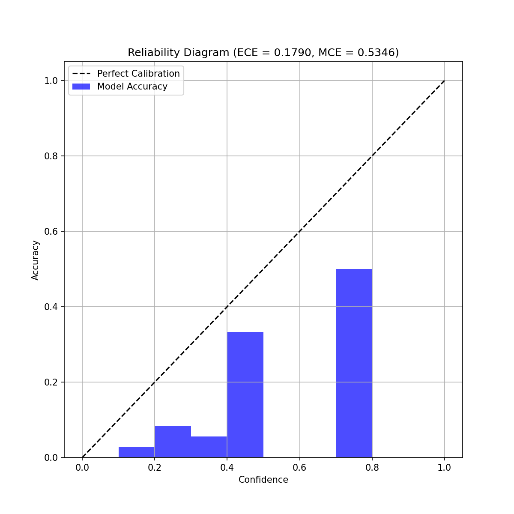
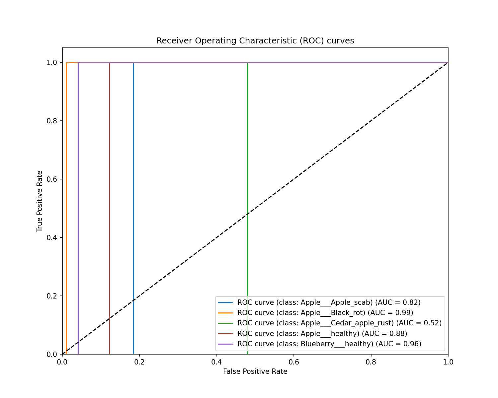

Final Year Engineering Project: Research & Production Training Report
Average Image Resolution: 0.0 x 0.0 pixels
Dataset Balance Status: Balanced (Standard Deviation: 0.00)
Best Selected Configuration: Optimizer: Adam, LR: 0.001, Dropout: 0.4, Batch: 16
| Trial | Optimizer | Learning Rate | Dropout | Batch Size | Val Accuracy | Duration |
|---|---|---|---|---|---|---|
| Trial 1 | Adam | 0.001 | 0.4 | 16 | 0.0000 | 268.9s |
| Trial 2 | Adam | 0.01 | 0.2 | 32 | 0.0000 | 278.4s |
| Trial 3 | SGD | 0.001 | 0.3 | 16 | 0.0000 | 266.6s |
| Architecture | Accuracy (Fold 0) | Latency | FPS (CPU) | Model Size | Params Count | Training Time |
|---|---|---|---|---|---|---|
| MobileNetV3 | 0.3132 | 274.6 ms | 3.6 FPS | 13.6 MB | 384,981 | 57.5 min |
| EfficientNetV2 | 0.0589 | 401.2 ms | 2.5 FPS | 25.7 MB | 557,141 | 175.9 min |
Selected Architecture: MobileNetV3
Folds Accuracies: [0.2727]

Confidence-to-Accuracy Reliability Diagram

Receiver Operating Characteristic (ROC) Curves
Automatically Selected Format: TFLite_FP16
| Format Target | File Size | Inference Latency (Single item) | Throughput (FPS) |
|---|---|---|---|
| Keras | 51.87 MB | 167.40 ms | 6.0 FPS |
| TFLite_FP16 Recommended | 6.50 MB | 9.12 ms | 109.7 FPS |